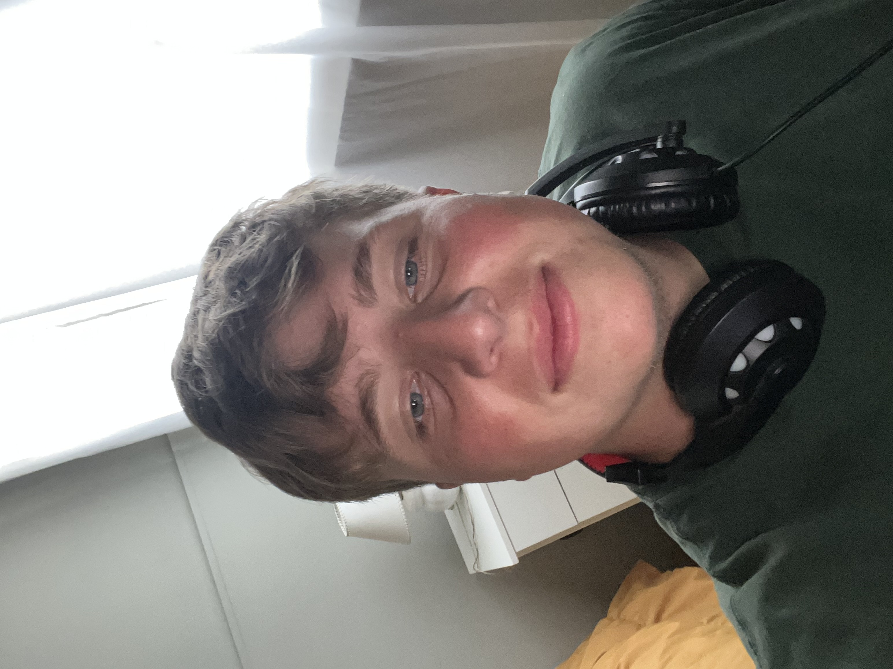

Desarrollo de software
Programo en Java, C#, Python y JavaScript. Desarrollé APIs REST, aplicaciones de escritorio y sistemas con arquitectura en capas.
Desarrollo · QA · Automatización de procesos
Soy Técnico Universitario en Programación de Sistemas (UTN Bahía Blanca). Cofundé Nexora, una agencia donde desarrollo automatizaciones con IA e integraciones para clientes reales, y antes trabajé como QA Tester en Blyts. Programo en Java, C#, Python y JavaScript.
Busco sumarme a un equipo como desarrollador, QA o especialista en automatización de procesos, en Bahía Blanca o de forma remota.
Clientes reales con automatizaciones en Nexora
Documentados y seguidos como QA Tester
Java, C#, Python y JavaScript

Desarrollo · QA · Automatización
Stack & Tecnologías
Programo en Java, C#, Python y JavaScript. Desarrollé APIs REST, aplicaciones de escritorio y sistemas con arquitectura en capas.
Hago pruebas funcionales y de regresión, documento bugs y les hago seguimiento hasta que se resuelven. Tengo experiencia en apps y videojuegos mobile.
Diseño y desarrollo automatizaciones con IA en n8n, e integro las herramientas de cada negocio para que los procesos funcionen solos.
Experiencia profesional
Desarrollo de automatizaciones e integraciones · Agencia de soluciones tecnológicas · nexora-ai.com.ar
Apps y videojuegos mobile
Proyectos
Flujos de automatización que desarrollo en Nexora para negocios de turismo, hotelería y gastronomía.
Aplicación de escritorio en C# para gestionar inventario. La entregué a una empresa que llevaba su stock en planillas.
Sistema de gestión bancaria que desarrollé en Java con Spring Boot para aprender arquitectura MVC.
API REST para gestionar los empleados y las áreas de una empresa, hecha con Node y Express. Más adelante se le sumó un frontend en Flutter que consume la API.
Formación
UTN · Bahía Blanca
Idiomas & soft skills
¿Trabajamos juntos?
Estoy abierto a roles de desarrollador junior, QA o automatización de procesos, en Bahía Blanca o de forma remota. Aprendo rápido y me gusta entender bien el problema antes de ponerme a programar.